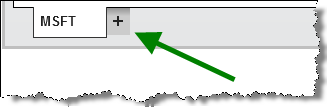
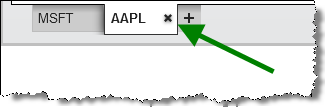
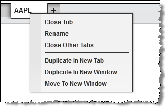
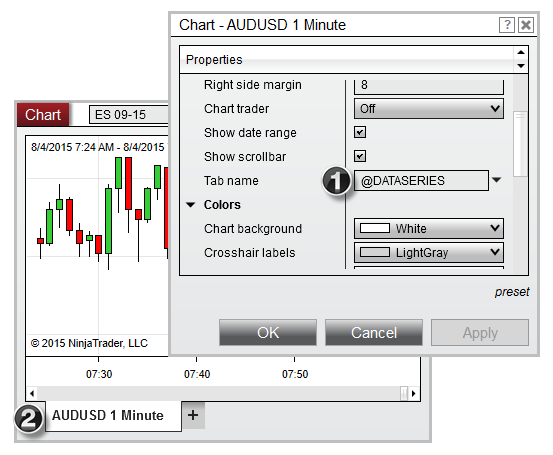

|
<< Click to Display Table of Contents >> Using Tabs |


|
Using Tabs
|
<< Click to Display Table of Contents >> Using Tabs |
|
Various windows in NinjaTrader are now a tabbed interface, this gives you the ability to have multiple tabs in the same window.
Adding TabsPressing the + tab will create a new Time & Sales tab in this window.

|
Removing TabsMoving your mouse over the tab handle and selecting the x icon to remove that specific tab.

|
Reordering TabsClick and hold to drag the tab into the desired position in the tab area. |
Right Click MenuRight mouse click on the tab to access the right click menu to perform a tab action. 
|
 Duplicating a window and it's tabs
Duplicating a window and it's tabs
Duplicate WindowRight mouse click on the title bar of a window and selecting Duplicate Window will duplicate the window, including it's tabs.
|
Using Tab Name VariablesTabs throughout NinjaTrader allow for the use of pre-defined variables which will dynamically populate tab names with relevant labels, such as the instrument name, period, or account selected in the tab. To use one of the variables listed in the table below, first open the window's Properties dialogue, then enter your chosen variable in the "Tab Name" field.
 1) The variable "@DATASERIES" has been entered in the "Tab Name" field of the Chart Properties window. 2) The "@DATASERIES" variable populates the instrument full name and period in the selected tab.
|
Switching TabsYou can switch between tabs by clicking on the desired tab or by pressing CTRL+Tab on your keyboard. |